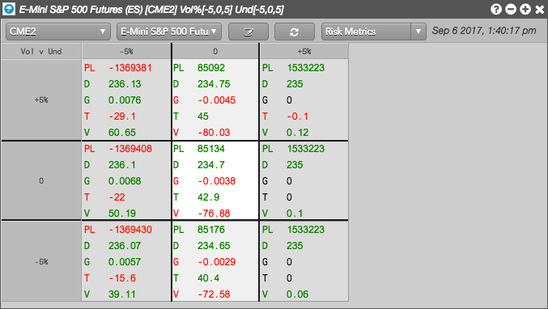
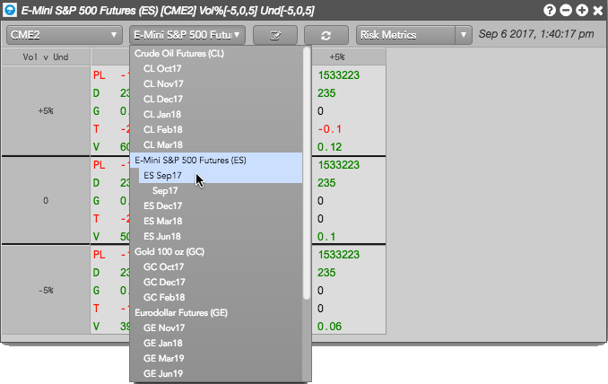
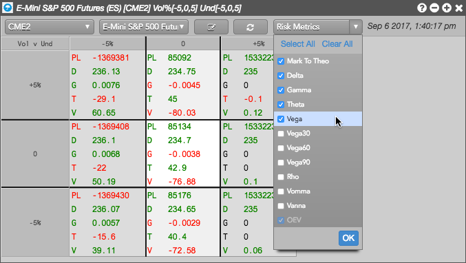

You can view Risk Matrix for each account in which you have an open position.
To view Risk Matrix:
Open a Risk Matrix widget.
A matrix for the default account in which you have an open position is displayed. Risk Matrix defaults to scenario settings of "-5,0,5" for global volatility and the underlying futures contract.

Select a product, underlying, or expiry.
If two expiries have the same underlying instrument, you can choose to see the whole product, the options and futures that expire into the selected underlying instrument, or an individual options expiry.

The P/L and risk metrics are displayed for the selected product, underlying, or expiry and provide a snapshot of your options risk.
Click Risk Metrics to select which Greeks and metrics to display and click OK
.
To recalculate the position and P/L in the account based on the current price of the underlying instrument, click .
The recalculated values are displayed in the matrix.